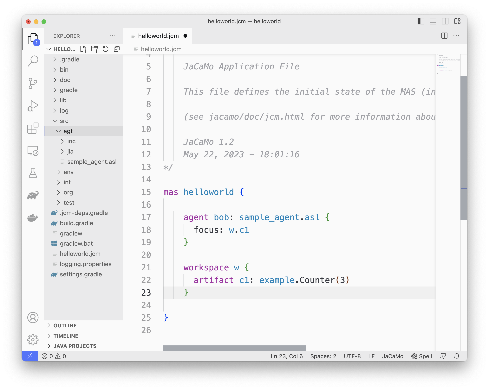
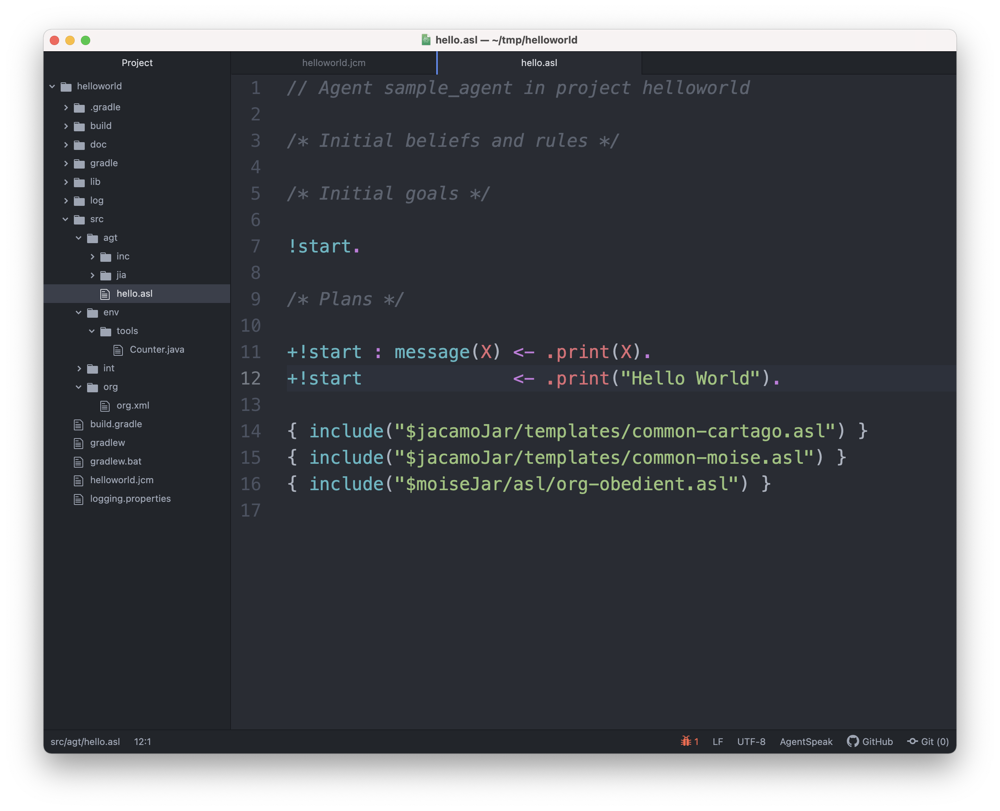
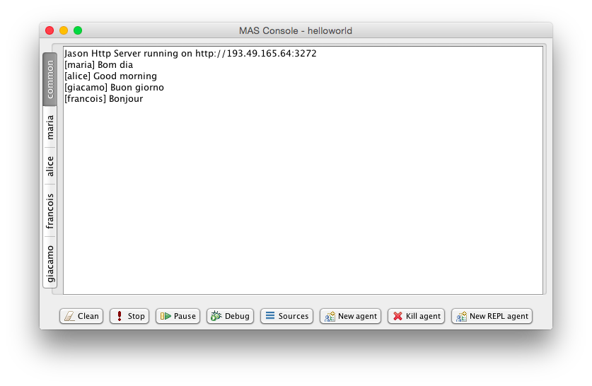
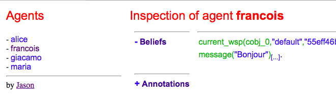
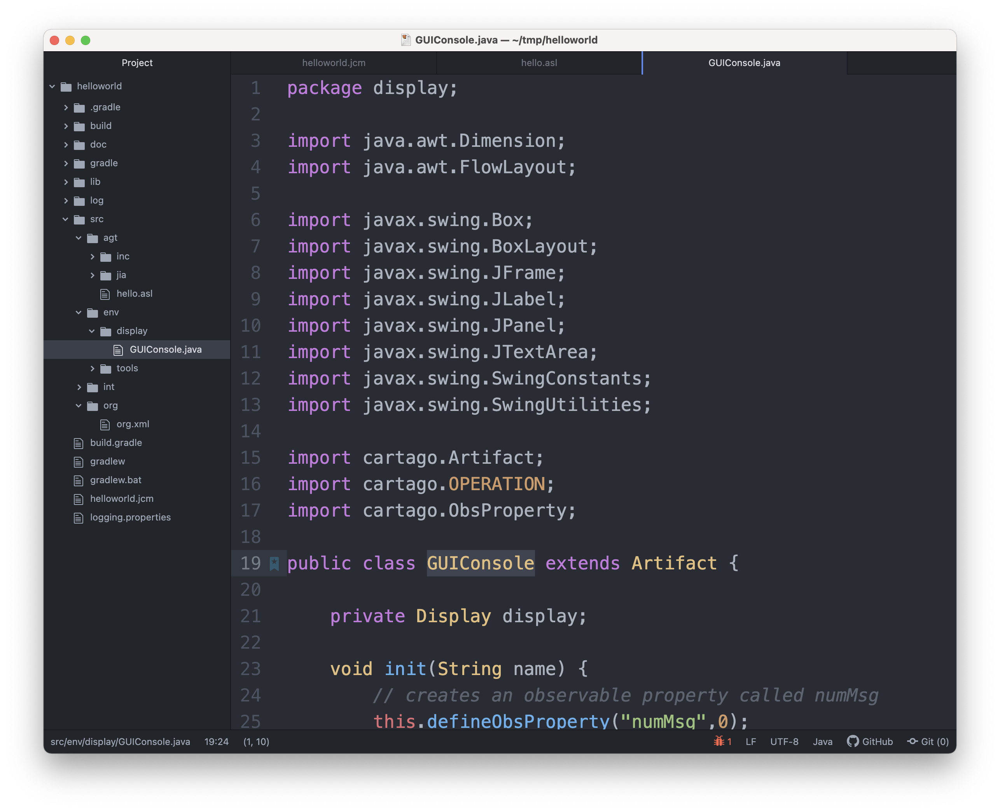
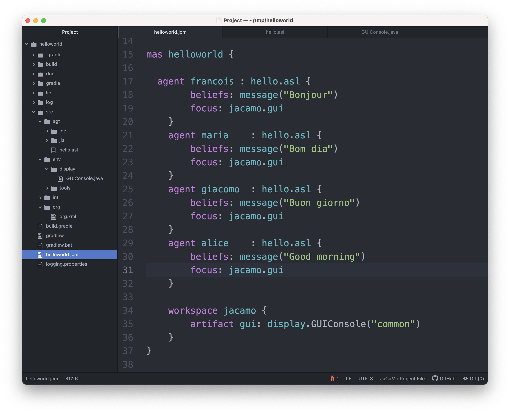
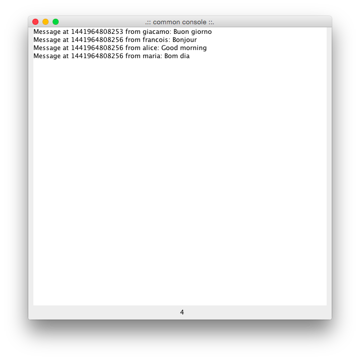

Introduction
This programming tutorial illustrates some features of JaCaMo through the development and refinement of a kind of (sophisticated) Hello World application that considers agents, environment and organisation.
Part I (new project)
In this tutorial, Gradle+VSCode is used as the IDE (see installation instructions). You can also take a look in the getting started document to find more about crating JaCaMo projects.
The first step is to create a new project named helloworld:
- Unix
-
wget -q http://jacamo-lang.github.io/jacamo/nps/np1.3.zip unzip np1.3.zip ./gradlew --console=plain
- Windows
-
-
Unzip
-
Run
gradlew.bat
When asked for the application identification, answer helloworld:
> Task :run JaCaMo 1.3.0 Enter the identification of the new application: helloworld Creating path /Users/jomi/tmp/helloworld You can run your application with: cd /Users/jomi/tmp/helloworld ./gradlew -q --console=plain
The file helloworld.jcm (the project file) describes the project and is the main focus of this tutorial. By opening this file in VSCode, you will
have screen like the following:

Project files (with extension .jcm) allow us to define the agents, the
environment and the organisation of our multi-agent application.
Part II (agent)
Our initial application will have four agents that will print different
hello world messages. The source code for all of them will be the same
(a Jason .asl file), but they will have different names and different
initial beliefs.
1. To add the four agents, in the project file, replace
agent sample_agent by:
agent francois : hello.asl {
beliefs: message("Bonjour")
}
agent maria : hello.asl {
beliefs: message("Bom dia")
}
agent giacomo : hello.asl {
beliefs: message("Buon giorno")
}
agent alice : hello.asl {
beliefs: message("Good morning")
}The four agents (named francois, maria, giacomo, and alice)
share the same program file hello.asl, that does not exist yet (it
will be created in the following step). As can be seen in this project
file, each agent will have an initial belief message("xxxxx")
corresponding to the message that it should use to say hello.
2. To create a new agent type select src/agt/sample_agent.asl and then rename it to hello.asl.
3. Our initial agents will be obedient to everything their organisation asks for! Thus, uncomment the last line in the file hello.asl. In order to take into account the belief message, the plan to achieve the goal !start has to be improved as shown below:

The plan in line 11 on the picture can be read by the agent as "whenever
I have the goal !start and I believe in message(X), I will achieve
this goal by doing .print(X). X is a variable that gets value by
matching message(X) with some agent’s belief. If the agent belief is
message("Bom dia"), the value of X will be "Bom dia".
If the plan in line 11 cannot be used (because the agent does not
believe in message(X)), then the plan in line 12 is used.
|
Note
|
the order of the plans for achieving goal start is important. If
you place plan of line 12 before the one in line 11, this latter will
never be executed!
|
4. You can now run the application
./gradlew
the result should be the following in
the MAS Console of the project:

You can use the mind inspector (http://localhost:3272) to see mental state of the agents when clicking on the agent’s name:

Exercises
a) Create a new type of agent (called hello2.asl) with the following
initial code:
msg(fr,"Bonjour").
msg(br,"Bom dia").
msg(it,"Buon giorno").
msg(us,"Good morning").
!start.
{ include("$jacamo/templates/common-cartago.asl") }
{ include("$jacamo/templates/common-moise.asl") }
{ include("$moise/templates/org-obedient.asl") }Change the .jcm project so that the agent gets an initial belief
country(…..). This belief defines the agent’s country (e.g.
country(it)). In the jason code of the agent, write a plan for
achieving the goal start that considers the country belief and the
msg predicates defined in the code above.
Hint: in the plan’s context (what follows :) you can use the
operator & to write a conjunction of two predicates (e.g.
belief(X) & X > 10).
Solution: available here.
b) Add a new agent (called bob) in the application based on this new
agent type, that will join the system composed of alice, francois,
giocamo and maria.
Solution: available here.
Part III (environment)
The environment of this application is quite simple, it has a graphical
display artifact where agents can print messages and perceive the number
of already printed messages. The artifact has thus one observable
property (numMsg) and one operation (printMsg(String)). Initially
all agents will share the same display artifact and latter we will have
displays in several countries.
1. To create the display artifact, select src/env/tools/Counter.java and rename it to src/env/display/GUIConsole.java. Then replace the default code of GUIConsole by the Java code available here. Identify in the Java source code where the observable properties and operations are declared.

2. Add this artifact in the project by including the following lines in the .jcm project:
workspace jacamo {
artifact gui: display.GUIConsole("common")
}The above lines create an instance of the display artifact and named it
gui. This artifact will be placed in a workspace identified by
jacamo.
3. In order to perceive this artifact, the agents need to focus on it.
This is why we add for each agent a focus instruction focusing on the
artifact gui in the workspace jacamo:

In the agent source code (file hello.asl), replace the .print action
by printMsg which is the name of the operation provided by the gui
artifact. The agent will thus use the artifact operation instead of the
Jason MAS Console.
+!start : message(X) <- printMsg(X).|
Note
|
any action corresponding to the call of an operation on an artifact
doesn’t start with a .. The actions preceded by a . as .print are
Jason internal actions.
|
4. The result of the execution should be:

5. Instead of having a shared display artifact, we will now create one display artifact for each country. Since artifacts are inside workspaces, we will also create a workspace for each country.[1] The following new lines for the project file (.jcm) will create the workspaces and artifacts:
workspace france {
artifact gui: display.GUIConsole("France")
}
workspace italy {
artifact gui: display.GUIConsole("Italy")
}
workspace brazil {
artifact gui: display.GUIConsole("Brazil")
}
workspace usa {
artifact gui: display.GUIConsole("USA")
}|
Note
|
the name of the artifact should be unique in one workspace, but we
can have the same name in different workspaces. For instance the name
gui of the artifact display.GUIConsole is the same in all workspaces.
|
6. In order to perceive the artifacts (by focusing on them), the
agents should be placed in their proper workspace. This is why we add
the join instruction in the project file as follows:
agent francois : hello.asl {
beliefs: message("Bonjour")
join: france
focus: france.gui
}
agent maria : hello.asl {
beliefs: message("Bom dia")
focus: brazil.gui // we can avoid the explicit join (as in francois) since the focus in JCM files implies a join
}
agent giacomo : hello.asl {
beliefs: message("Buon giorno")
focus: italy.gui
}
agent alice : hello.asl {
beliefs: message("Good morning")
focus: usa.gui
}7. The result of the execution should be:
You can use the workspace inspector (http://localhost:3273) to see the current state of the environment (clicking on each or artifact allows to inspect its observable properties):
8. What happens in case an agent joined two workspaces as below? (remind that focusing on an artifact implies joining the workspace hosting this artifact)
agent francois : hello.asl {
beliefs: message("Bonjour")
focus: france.gui
focus: italy.gui
}The message is shown in an undetermined console! Two alternatives are proposed to solve it:
9. Create a new source code for francois: copy hello.asl to hf.asl and change the source code for francois in its agent declaration to take this into account.
agent francois : hf.asl {
beliefs: message("Bonjour")
focus: france.gui
focus: italy.gui
}In hf.asl, change the plan for achieving the goal start to:
+!start : message(X)
<- ?focused(france, gui, ArtId);
printMsg(X)[artifact_id(ArtId)].This plan consults (by the operator ?) the belief base of the agent for the artifact id corresponding to the artifact named gui in workspace france [2]. Then this id is used as an annotation for the action printMsg, defining the exact artifact where this operation will be executed.
10. To print a message in all console artifacts named "gui", change the plan for achieving the goal start to:
+!start : message(X)
<- for ( focused(_,gui,ArtId) ) {
printMsg(X)[artifact_id(ArtId)]
}.This plan can be read as "for each answer for the query focused(_,gui,ArtId), print a message using the value of variable ArtId as the target artifact". The _ means "any thing". Each iteration of the loop will have ArtId assigned to a different value.
Exercises
-
Place your agent
bobin the right workspace or in many workspaces and change his code so that it prints the messages in all consoles he knows. -
Change one workspace by adding a second GUIConsole with a different name and focus some agents on this new artifact.
-
Using the mind inspector, try to understand the reasons of all the beliefs of the agent
francois. -
(hard) Instead of using the artifact name, as in the step 10, select the artifact ids by the name of the Java class used to create the artifact (
display.GUIConsolein our case).
Hint: In the mind inspector, take a closer look at the annotations
of beliefs numMsg by clicking on […].
Solution: available here.
Part IV (organisation)
We will change our example so that the printing of "Hello World" will be
a coordinated task for our four agents: each agent will print one
character of the message. For instance, francois will print the "H",
maria the "e", giacomo the "l", and so on. Notice that it is very
important that they coordinate for the task, for instance, maria
should print the "e" only after francois has printed the
"H".[3]
One way to coordinate the execution of joint taks is by mean of an organisation. In JaCaMo the organisation is programmed based on the Moise model, where groups, roles, missions, goals, global plans, and schemes are defined. Our organisation has one global goal print_hello that is decomposed into several sub-goals, one for each letter. The sub-goals have to be achieved in sequence, so that the message will be printed correctly.
These goals are distributed to the agents by means of missions (a set of goals an agent can commit to). The following missions are proposed:
-
print_vowel: the agent responsible for this mission will print the vowels of the message. -
print_l: the mission to print the characterl. -
print_consonant: the mission to print the remaining consonants. -
print_special_chars: the mission to print spaces and exclamation marks.
The combination of goals, plans and missions is called a /social scheme/ in Moise. In our example, the social scheme is identified by hello_sch. The following diagram, in Moise notation, represents the social scheme:[4]
Before committing to the missions, the agents have to play roles in the group responsible for the social scheme. In this tutorial, we simply have defined a group with roles corresponding to the above missions:
-
rv: the agent playing this role is obliged to commit to the missionprint_vowel. -
rl: the role obliged to commit to the missionprint_l. -
rc: the role obliged to commit to the missionprint_consonant. -
rs: the role obliged to commit to the missionprint_special_chars.
In Moise notation:
1. To create an organisational specification, select src/org/org.xml and rename it to o1.xml. Open o1.xml and replace its content by this file. It contains an XML representation of the above specification. Try to identify the roles, missions, and schemes in the file.
2. Based on this specification, the following code in the project file (helloworld.jcm) will create an organisation entity (i.e. agents within an organisation) where francois will play role rv, maria the role rl, giacomo the role rc, alice the role rs in the group jacamo_team which is of type team. This group is responsible for executing the social scheme hello_eng of type hello_sch.
organisation hello_org: o1.xml { // the organisational entity is hello_org from spec o1.xml
group jacamo_team: team { // instance group (jacamo_team) from spec team
responsible-for: hello_eng // that will be responsible for the execution of scheme hello_sch (defined below)
players: francois rv, // the roles of the agents in this group
maria rl,
giacomo rc,
alice rs
}
scheme hello_eng: hello_sch // instance scheme (hello_eng) from spec hello_sch
}3. On the agents side, we need to include in their code plans so that they are capable to achieve their organisational goals and fulfil their duties. Change hello.asl to:
+!print_h : focused(jacamo,gui,ArtId) <- printMsg("H")[artifact_id(ArtId)]; .wait(700).
+!print_e : focused(jacamo,gui,ArtId) <- printMsg("e")[artifact_id(ArtId)]; .wait(700).
+!print_l1 : focused(jacamo,gui,ArtId) <- printMsg("l")[artifact_id(ArtId)]; .wait(700).
+!print_l2 : focused(jacamo,gui,ArtId) <- printMsg("l")[artifact_id(ArtId)]; .wait(700).
+!print_l3 : focused(jacamo,gui,ArtId) <- printMsg("l")[artifact_id(ArtId)]; .wait(700).
+!print_spc : focused(jacamo,gui,ArtId) <- printMsg(" ")[artifact_id(ArtId)]; .wait(700).
+!print_w : focused(jacamo,gui,ArtId) <- printMsg("W")[artifact_id(ArtId)]; .wait(700).
+!print_o1 : focused(jacamo,gui,ArtId) <- printMsg("o")[artifact_id(ArtId)]; .wait(700).
+!print_o2 : focused(jacamo,gui,ArtId) <- printMsg("o")[artifact_id(ArtId)]; .wait(700).
+!print_r : focused(jacamo,gui,ArtId) <- printMsg("r")[artifact_id(ArtId)]; .wait(700).
+!print_d : focused(jacamo,gui,ArtId) <- printMsg("d")[artifact_id(ArtId)]; .wait(700).
+!print_excl : focused(jacamo,gui,ArtId) <- printMsg("!")[artifact_id(ArtId)]; .wait(700).
{ include("$jacamo/templates/common-cartago.asl") }
{ include("$jacamo/templates/common-moise.asl") }
{ include("$moise/asl/org-obedient.asl") }As we can easily see, each organisational goal is achieved by a Jason plan. The plan discovers the artifact id of the common console and prints the corresponding letter there. There is no more a start initial goal. All agent’s goals come from the roles they play in the organisation. It is also the organisation that controls when those goals could be achieved, and thus coordinate the agent’s actions as defined in the scheme.
Briefly, the agent has a role as defined in the project file (the organisation/group entry). By playing a role in the group jacamo_team (the group responsible for the scheme hello_eng), the agent is obliged to commit to the corresponding mission. Since it is obedient (it includes "org-obedient.asl"), it commits to the mission. As soon as the mission goals become enabled in the scheme, the agent is obliged to achieve them. Once obliged, the Jason plans are used to achieve the goals.
Finally, the agents need to focus on the common artifact gui in the jacamo workspace as follows:
...
agent francois : hello.asl {
beliefs: message("Bonjour")
focus: france.gui
focus: italy.gui
focus: jacamo.gui
}
agent maria : hello.asl {
beliefs: message("Bom dia")
focus: brazil.gui
focus: jacamo.gui
}
agent giacomo : hello.asl {
beliefs: message("Buon giorno")
focus: italy.gui
focus: jacamo.gui
}
agent alice : hello.asl {
beliefs: message("Good morning")
focus: usa.gui
focus: jacamo.gui
}
workspace jacamo {
artifact gui: display.GUIConsole("common")
}
...The complete project file is available here.
4. The result of the execution should be:
(the characters appears as expected!)
You can use the Moise web interface to inspect the organisation at http://localhost:3271) (by clicking on each of the groups, roles, schemes, etc you can inspect each of the elements of the organisation):
Exercises
-
Assign a role to your
bobagent. -
Assign two roles to
bob. -
In the file
o1.xml, replace<plan operator="sequence">by<plan operator="parallel">and notice the difference in the execution. -
Keeping the same group and roles, create another scheme (goals, plans, and missions) to print another message. Extend also the agent code to handle the new goals.
-
(hard) Create another
GUIConsoleinstance to be used to print the message of the scheme you have developed in the previous exercise.
Hint: The organisational goals are annotated with the scheme that has produced it. For instance, a plan like
+!print_h[scheme(S)] <- ....will have in the variable S the scheme identifier (e.g. hello_eng).
The value of this variable can be used to select the proper console.
You find
-
all the files of this tutorial here.